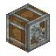

蒸汽工坊
锅炉与蒸汽动力
把镍、铝接入锅炉与湿选设备。还需到暮色森林和天境取得首份炽晶样本。
本章主线
-

搭磨洗和湿选工位
用黄铜航空芯片做湿选组件，接上粉碎与注水风洗。
-

炼铝和镍，接通蒸汽
铝锭压板供蒸汽引擎，镍用于炼制镍钢。
-
取炽晶样本
备好九头蛇炽血、天境青铜地牢证据和紫晶石。
-

制陀螺飞行芯片
在铝板上装陀螺仪机构和磁铁精矿，用炽晶样本校准。
查看完整依赖图
黄铜航空芯片
- 规划解锁
- 湿选组件
- 说明
- 完成「黄铜轻航」带来本章的冶炼升级。
湿选组件
- 规划前置
- 黄铜航空芯片、上一章精密构件、感应构件与铜管
- 规划解锁
- 蒸汽工坊冶炼能力
- 产率路线
- 粉碎轮＋注水洗＋匠魂 · 10.4 铁粒当量
- 装配
- 制作时投入芯片，部件装进工位或组成炉圈。节点使用游戏中已有材料的图标。
蒸汽工坊冶炼能力
- 规划前置
- 湿选组件
- 规划解锁
- 本章镐与动力钻头
- 冶炼限制
- 黄铜航空芯片开启控温工作盆和湿选工位。镍黄铁矿先富集成镍锍，铝土矿先富集再精炼。首件升级材料由本章可达的工艺供给。
- 说明
- 用锡青铜与已有精密构件升级刀头。用现有风车或水轮磨洗矿料，先生产一批铝板和锅炉零件。
本章镐与动力钻头
- 规划前置
- 蒸汽工坊冶炼能力
- 规划解锁
- 镍黄铁矿、铝土矿
- 说明
- 先用上一章已有材料制造合格钻头部件。Create 动力钻头在合成时消耗这个部件，成品继承它的挖掘等级。
铝板
- 规划前置
- 铝锭
- 规划解锁
- 陀螺飞行芯片、基础锅炉、基础烈焰人燃烧室、蒸汽引擎
- 说明
- 用前章的风车或水轮磨洗铝土矿。熔出的铝锭压成铝板，给基础锅炉和本章动力件用。
陀螺飞行芯片
- 现服前置
- 炽晶样本
- 规划前置
- 铝板
- 现服下游
- 陀螺螺旋桨轴承、绳索绞盘、万向传感器
- 规划解锁
- 精炼冶金冶炼能力
- 说明
- 陀螺飞行芯片开启精炼冶金。基础锅炉带动蒸汽引擎提供主要应力。飞艇在本章继续使用热空气。
镍黄铁矿
- 规划前置
- 本章镐与动力钻头
- 现服下游
- 镍锍
- 说明
- 主世界或暮色森林的镍黄铁矿脉。化学富集后回收镍和副产铁。
铝土矿
- 规划前置
- 本章镐与动力钻头
- 现服下游
- 氧化铝
- 说明
- 主世界铝土矿透镜体或天境矿床。用于气动工序的铝材。
精炼冶金冶炼能力
- 规划前置
- 陀螺飞行芯片
- 说明
- 开启下一章可制的切削工具。
基础锅炉
- 规划前置
- 铝板
- 说明
- 开放第一档锅炉，先用于蒸汽引擎与机械传动。
基础烈焰人燃烧室
- 规划前置
- 铝板
- 说明
- 给基础锅炉供热。
蒸汽引擎
- 规划前置
- 铝板
- 说明
- 锅炉蒸汽带动主要应力。
暮色森林 · 九头蛇
- 现服下游
- 炽晶样本
- 说明
- 火焰沼泽带回炽血。
天境 · 滑行魔石
- 现服下游
- 炽晶样本
- 说明
- 从青铜地牢取回青铜钥匙，登记母样后可用于开箱。
天境 · 开采紫晶矿
- 现服下游
- 炽晶样本
- 说明
- 带回紫晶石，与磁铁精矿一同送往炽晶样本研究。
炽晶样本
- 辅矿
- 紫晶石是炽晶样本的现场材料。
- 现服前置
- 暮色森林 · 九头蛇、天境 · 滑行魔石、天境 · 开采紫晶矿
- 现服下游
- 陀螺飞行芯片
- 说明
- 收齐标出的战利品，研究一次母样，以后可复制。
镍锍
- 现服前置
- 镍黄铁矿
- 现服下游
- 镍锭
- 说明
- 镍黄铁矿先研磨、水洗，再加捕收剂富集。
镍锭
- 现服前置
- 镍锍
- 现服下游
- 镍钢
- 说明
- 用镍锍低收率试炼首批镍。进阶路线可提高回收。
镍钢
- 现服前置
- 镍锭
- 说明
- 将镍和钢制成镍钢，留给精炼冶金的高炉外圈与首件切削工具。
氧化铝
- 现服前置
- 铝土矿
- 现服下游
- 铝锭
- 说明
- 铝土矿磨洗后用试剂富集为氧化铝。
铝锭
- 现服前置
- 氧化铝
- 规划解锁
- 铝板
- 说明
- 铝锭用动力冲压机压成铝板。
陀螺螺旋桨轴承
- 现服前置
- 陀螺飞行芯片
- 说明
- 飞行姿态控制支线。现服配方使用陀螺飞行芯片和陀螺仪机构。
绳索绞盘
- 现服前置
- 陀螺飞行芯片
- 说明
- 用于从飞艇上吊运设备。现服配方使用陀螺飞行芯片。
万向传感器
- 现服前置
- 陀螺飞行芯片
- 说明
- 用于姿态检测。现服配方使用陀螺飞行芯片。
连线包含独立的制作条件和可选加工路线。每个节点的完整说明可悬停查看。
查询任务、材料与数值
| 任务节点 | 要生产 | 制约条件 |
|---|---|---|
|
冶炼与切削
|
本章新冶炼能力、切削工具 | 黄铜航空芯片 → 湿选组件 |
|
新矿物
|
镍黄铁矿、铝土矿 | 达到本章挖掘等级的镐或钻头 |
|
初级产物
|
铝板 | 本章冶炼、已有部件 |
|
蒸汽工厂
|
第一档锅炉与烈焰人燃烧室、蒸汽引擎 | 铝板 |
|
远征门槛
|
炽晶样本 | 九头蛇、滑行魔石、天境紫晶 |
|
高级芯片
|
陀螺飞行芯片 | 铝板、磁铁精矿与炽晶样本 |
挖掘等级。规划中，Create 动力钻头的合成消耗对应等级的钻头部件，成品保留该部件的挖掘等级。镐、动力钻头与 CreateMine 共用矿物挖掘门槛。动力和转速影响效率。
本章冶炼设计。黄铜航空芯片开启控温工作盆和湿选工位。镍黄铁矿先富集成镍锍，铝土矿先富集再精炼。首件升级材料由本章可达的工艺供给。